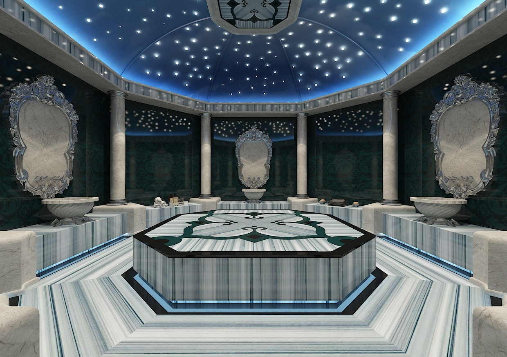

Türk Hamamı Deneyimi
Genel Bakış
Türk hamamı yüzyıllardır süregelen bir gelenektir ve bu deneyim, ritüeli baştan sona geleneksel haliyle takip eder. Isıtılmış mermer platformda (göbek taşı) gözeneklerinizi nazik bir buharla açarak dinlenmeyle başlar, ardından bir görevli cildi fark edilir derecede pürüzsüzleştiren tam vücut kese uygulaması yapar.
Bunu, geleneksel usulde bir bezden bolca dökülen ılık köpük yıkama takip eder ve ziyaret isteğe bağlı bir yağ masajıyla sona erer. Kadınlar ve erkekler için ayrı seanslar mevcuttur; tüm deneyim, otantik olduğu kadar rahatlatıcı olacak şekilde tasarlanmıştır.
Öne Çıkanlar
- Bodrum'un eski kasabasında tarihi bir hamam
- Geleneksel sıcak mermer platform (göbek taşı)
- Tam vücut kese pürüzsüzleştirme
- Sıcak, geleneksel köpük yıkama
- İsteğe bağlı yağ masajı yükseltmesi
- Kadın ve erkekler için ayrı seanslar
Tur Programı
-
00:00
Varış ve Giriş
Peştemalinizi giyip eşyalarınızı dolaba yerleştirin.
-
00:15
Mermerde Isınma
Buhar gözenekleri açarken sıcak göbek taşında dinlenin.
-
00:45
Kese Uygulaması
Geleneksel tam vücut kese ölü derileri arındırır.
-
01:05
Köpük Yıkama
Geleneksel usulde sıcak, bol köpüklü yıkama.
-
01:20
Dinlenme ve Çay
Dinlenme alanında bitki çayı ile tamamlanır.
Fiyata Dahil Olanlar
- Hamam girişi ve tam ritüel
- Kese ve köpük yıkama
- Havlu, peştemal ve terlik
- Seans sonrası bitki çayı
- Eşyalarınız için dolap
- Talep üzerine otel alış hizmeti
Fiyata Dahil Olmayanlar
- Yağ masajı yükseltmesi (isteğe bağlı ek)
- Önceden talep edilmemişse ulaşım
- Kişisel tuvalet malzemeleri
- Görevli için bahşiş
Önemli Bilgiler
- Buluşma Noktası: Tarihi Hamam, Bodrum Şehir Merkezi
- Kalkış Saati: 08:00
- Dönüş Saati: Aynı gün, seans sonunda
Konum
Bunlar da İlginizi Çekebilir
Aquapark Günlük Giriş
 BEST SELLER
BEST SELLER
Bodrum Tekne Turu